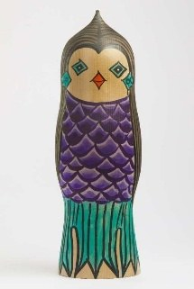

Amabie là một linh vật trong truyền thuyết dân gian Nhật Bản, được ghi chép lần đầu vào năm 1846 tại tỉnh Higo (nay thuộc tỉnh Kumamoto). Theo truyền thuyết, Amabie xuất hiện từ biển, tiên đoán về mùa màng bội thu và cảnh báo sẽ có dịch bệnh xảy ra. Linh vật này khuyên mọi người vẽ và truyền bá hình ảnh của mình để cầu mong được bảo vệ khỏi bệnh tật.
Tác phẩm này thuộc dòng 創作こけし (Sōsaku Kokeshi) – Kokeshi sáng tạo, kết hợp hình tượng truyền thuyết với nghệ thuật Kokeshi hiện đại. Nghệ nhân vẫn giữ hình khối đơn giản đặc trưng của Kokeshi nhưng tạo thêm phần thân cá phủ vảy, mái tóc dài và gương mặt hiền hòa, tạo nên hình ảnh vừa gần gũi vừa huyền bí. Màu tím, xanh và các hoa văn hình học được phối hợp hài hòa, thể hiện sự sáng tạo trong nghệ thuật Kokeshi đương đại.
Đặc biệt, từ đại dịch COVID-19, hình tượng Amabie đã trở thành biểu tượng của hy vọng, sức khỏe và tinh thần đoàn kết tại Nhật Bản. Hình ảnh Amabie xuất hiện rộng rãi trong nghệ thuật, đồ thủ công và các chiến dịch cộng đồng như một lời chúc mọi người luôn mạnh khỏe và bình an. Tác phẩm này không chỉ giới thiệu một truyền thuyết độc đáo của Nhật Bản mà còn thể hiện cách nghệ thuật truyền thống có thể thích ứng với cuộc sống hiện đại, tiếp tục lan tỏa những thông điệp tích cực đến cộng đồng.
アマビエは日本の民間伝承に登場する妖怪で、1846年に肥後国（現在の熊本県）で初めて記録されました。伝説によると、アマビエは海から現れて豊作を予言するとともに疫病の流行を告げ、「自分の姿を描いて人々に広めれば病から守られる」と語ったとされています。
本作は創作こけしの作品で、伝説上の姿と現代こけしの技法を融合させたものです。こけし特有のシンプルな形を保ちつつ、鱗に覆われた魚の胴、長い髪、穏やかな表情を加え、親しみやすさと神秘性をあわせ持つ姿に仕上げています。紫や緑の色彩と幾何学文様が調和よく組み合わされ、現代こけしならではの創造性が表れています。
特に新型コロナウイルス感染症の流行以降、アマビエは日本で希望・健康・連帯の象徴となりました。その姿はアート、工芸品、地域のキャンペーンなどに広く登場し、人々の健康と平安を願うメッセージとして親しまれています。本作は日本のユニークな伝説を紹介するだけでなく、伝統工芸が現代の暮らしに寄り添いながら、前向きなメッセージを発信し続けられることを示しています。